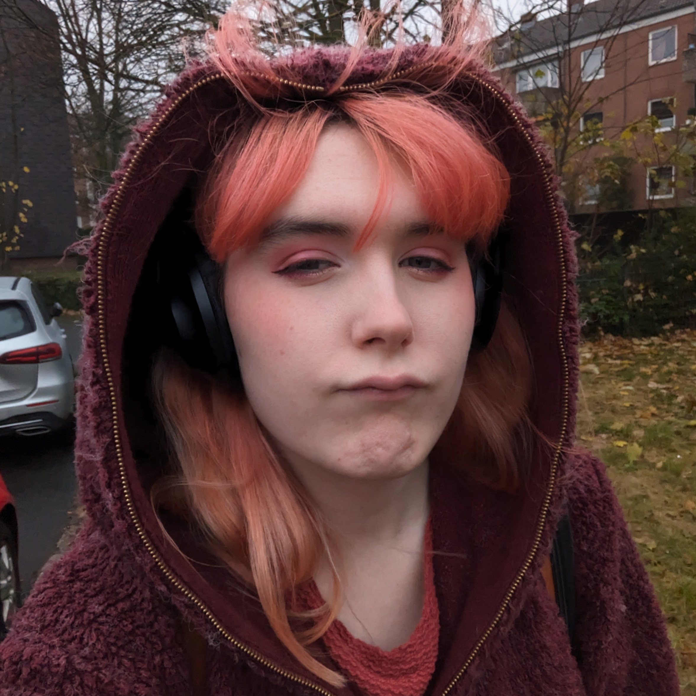
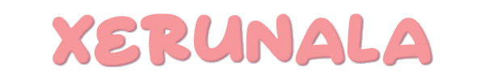

 LinkedIn
LinkedIn
 Mastodon
Mastodon
 Matrix
Matrix
 GitHub
GitHub
 Bluesky
Bluesky
 Instagram
Instagram
 Twitch
Twitch
 Twitter
Twitter
 Visit Website
Visit Website
Previous positions include:
- Final Fantasy XIV Community Manager at Square Enix (FT)
- Mars Vice Community Manager for Rho Labyrinths (Freelance)
- Java Spring/Angular Developer at CGI (PT/Trainee)
Mail me at xerunala @ this domain
Privacy Policy | Built with love and LittleLink.